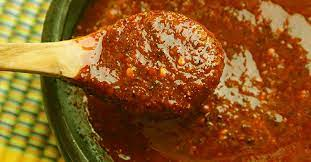

Red hot sauce

Description
Easy sauce to feed a large number of people.
A vital elemento for any decent meal.
Ingredients
- 10 small tomatillos (or green tomatoes)
- 2 cloves of garlic
- 10 to 15 chiles del arbol (depending on how much spice you can handle)
- 2 cubes of Knorr chicken bouillon
- Oregano (about half a teaspoon)
- Coriander (to taste)
- Salt (to taste)
Steps
- Boil the tomatillos and chiles in a small pot for 10 to 15 minutes.
- Place the tomatillos, chile, garlic, oregano and the cubes of bouillon in a blender.
- If the sauce looks too thick, water it down a little bit.
- Add salt to taste and some coriander leaves on top.